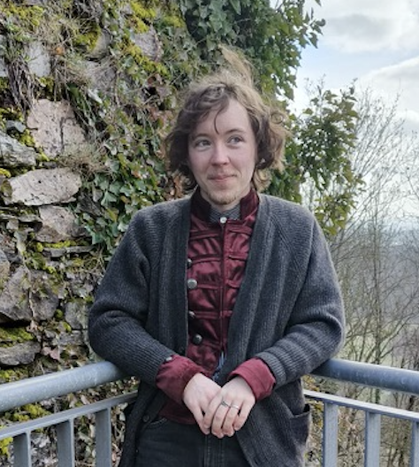

I grew up in the forest in the Taunus hills in Germany and alledgely once met the Dalai Lama there. When I was nineteen, I went off to college to study Creative Writing, Linguistics, and some other things. The smartest thing I did there was to revive the Linguistics Society together with my friend and the stupidest thing was get a stick and poke tattoo on my foot in a dorm room while we were all supposed to be in quarantine.
When I'm not at uni, I spend a lot of time writing, reading or with little fabric crafts. In the summer breaks, I work in the archive of an archaeological musuem and when I'm lucky, they let me see some artefacts. My favourite one so far has been a Roman pot with a smug face on it. My favourite archival good is a 20th century excavation journal in which the workers keeping it have drawn each other'sfaces.
in no particular order
by Anne Carson
| Prior Knowledge | Essentially nothing, but this seems fun |
| Expectations | My main priority in terms of techincal skills is to learn enough to allow me to work in archives or library collections, doing catalogueing and similar work |